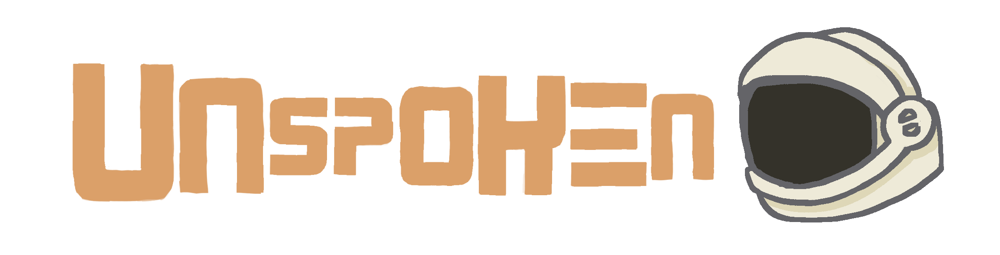
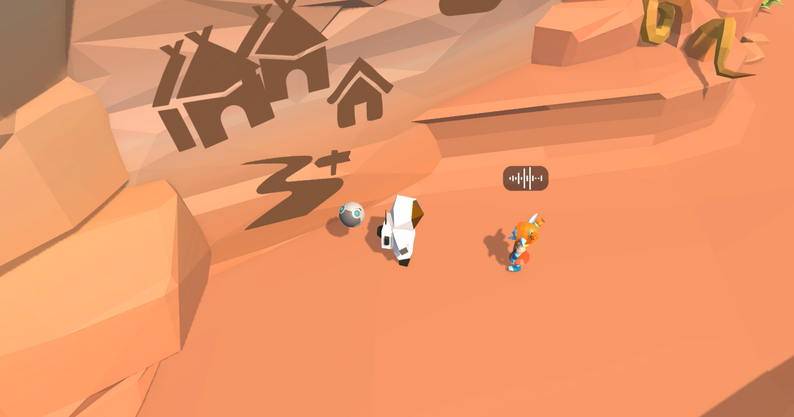
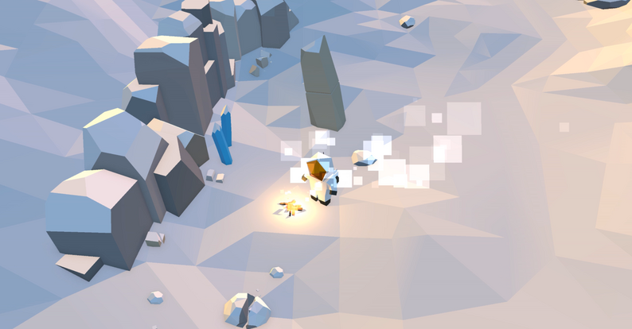
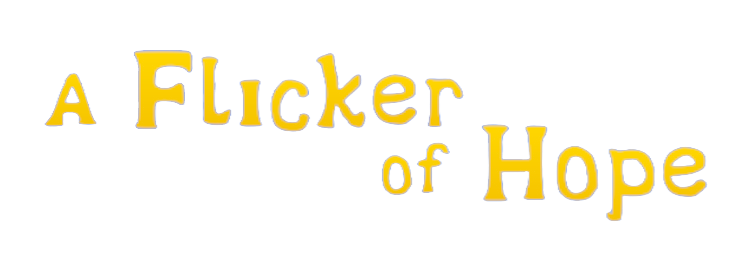
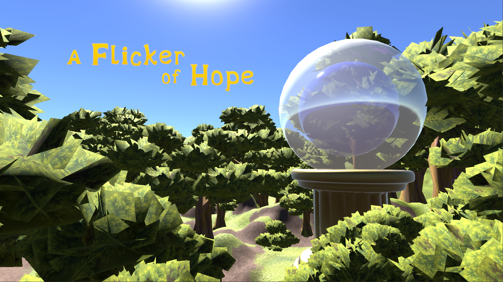

My Games


An action-packed multiplayer party game that puts players in the mischievous minds of raccoons on a midnight raid.



A linguistic puzzle adventure about listening, understanding, and finding your way home.




A Flicker of Hope follows a butterfly on a quest to restore an enchanted forest consumed by a dark curse. Once vibrant, the forest is now home to corrupted animals overcome by sorrow, anger, and fear. Guided by a pure heart, the butterfly brings hope to the gloom, helping the creatures rediscover themselves and reviving the forest through compassion and light.